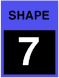

GLIDE shape
These select one of four shapes for the glide generators. Three of them produce “portamento”, which is a smooth sliding from note to note; one produces “glissando”, which is a chromatic scale from note to note.
| Constant time: This takes a certain amount of time, adjustable from 10ms to 15s, to get from one note to the next. |  |
|
| Exponential: This slows down as it approaches the target pitch, and theoretically never quite gets there, so the time is actually a “time constant”, the time it would have taken to get to the pitch if it hadn’t slowed down. It is also adjustable from 10ms to 15s. |  |
|
| Constant slope: This changes with a certain number milliseconds per semitone, so it takes longer the further it has to go. It is adjustable from 40ms to 980ms per semitone. |  |
|
| Glissando: This is just like the constant slope shape, but is quantized to semitones. |  |
Glide normally only functions in monophonic keyboard algorithm and the poly ordered and poly buffered algorithms. However, it can also be enabled on the normal poly mode via the left footswitch mode. When the footswitch is pressed, voice assignment temporarily becomes monophonic, and glides from note to note.
Glide A always controls oscillator A, and glide B always controls oscillator B, so to use glide one normally gangs the glide clusters together. When used elsewhere as a modulation source, middle C is zero, and 32 semitones equals one unit, so the Digital Chroma’s internal keyboard goes from –1 to almost +1 unit.
Toolkit
These are contained in the Glide clusters within the Glide section.
Chroma panel
These are contained in the GLIDE section of the right panel, under the following parameter number:
|  |
These appear in the display as Glide Shape.
MIDI
These are accessed via the following NRPNs:
| A | 1,1 | |
| B | 2,1 |
Values
| MIDI | display | ||
| 0 | constant time | (default) | |
| 1 | exponential | ||
| 2 | constant slope | ||
| 3 | glissando |